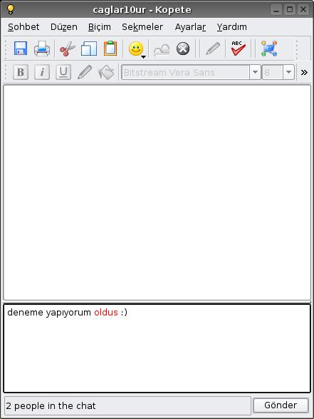

Zemberek Pardus
Zemberek Pardus
Zemberek Pardus projesi, Zemberek Türkçe doğal dil işleme yazılımını Pardus ve üzerindeki yazılımlar ile birleştirmeyi amaçlamaktadır.
Projenin hedefi; Pardus'un Türkçe yazım denetimi ve gramer kontrolü ihtiyaçlarının Zemberek tarafından, sistem kaynaklarını en az seviyede tüketen bir yapı ile karşılanmasıdır. Proje kapsamında Zemberek yardımı ile hem KDE altındaki temel yazılımlarda, hem de OpenOffice.org'da Türkçe imla denetimi yapılabilmektedir.
Kapsam
Proje çerçevesinde aşağıdaki iş tanımları geçerlidir.
- ZemberekServer protokolünün tam olarak belirlenmesi.
- ZemberekServer'ın bir servis olarak Pardus'a eklenmesi
- İmla denetimine ihtiyaç duyan uygulama programlarının Zemberek'i kullanmalarının sağlanması
Ekran Görüntüleri
 |
|  |
 |
 |
E-Posta Listeleri
http://liste.pardus.org.tr/mailman/listinfo/zemberek-pardus
Kodlar
zpspell: ZemberekServer için vekil (proxy) istemcisi.
Zemberek KDE (sürüm 3.4.2) yaması: KDE uygulamalarını yazım denetimi için Zemberek'i kullanmaları için gerekli KDE yaması.

Bu web sitesinde bulunan bilgi ve belgelerin, kaynak gösterilmek koşulu ile kullanılması serbesttir.
Pardus markası ve logotipi TÜBİTAK'ın tescilli markasıdır. Kullanım koşulları için Yasal Uyarı bölümünü inceleyiniz.
Pardus hakkında merak ettikleriniz için lütfen yardım sayfasına başvurun.
TÜBİTAK - UEKAE, PK.74 41470, Gebze / Kocaeli.
| Copyright 2007 Ulusal Elektronik ve Kriptoloji Araştırma Enstitüsü. Tüm Hakkı Saklıdır. | Görüşleriniz |